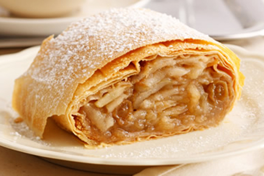
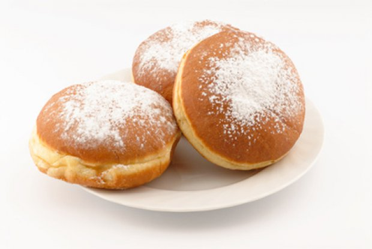
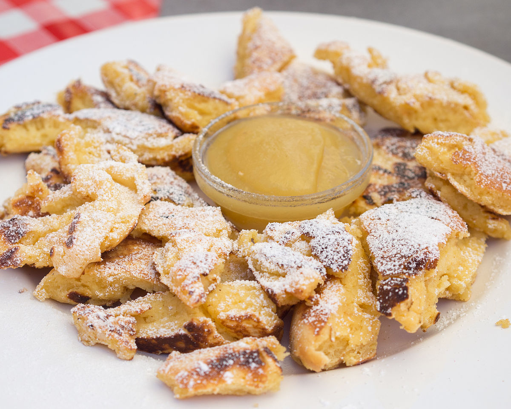
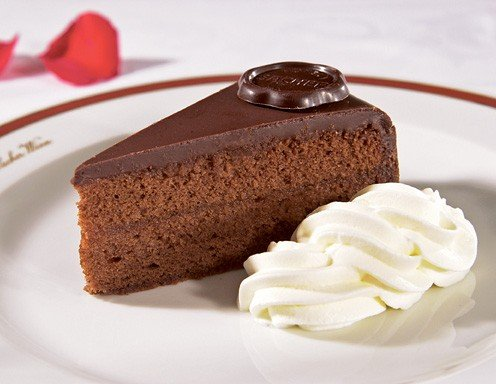

| Apfelstrudel |
 |
- An Austrian pastry made with a flaky crust and apple filling
- Difficulty Level: Hard
- Link to Recipe
|
Schaumrolle |
|
- An Austrian pastry filled with whipped cream or meringue
- Difficulty Level: Medium
- Link to Recipe
|
Faschingskrapfen |
 |
- These patries are often filled with apricot jam and are popular around Mardi Gras or Fat Tuesday
- Difficulty Level: Easy/Medium
- Link to Recipe
|
Kaiserschmarrn |
 |
- This dessert is like a shredded pancake served with powedered sugar on top but can also be eaten for breakfast
- Difficulty Level:Easy
- Link to Recipe
|
Sachertorte |
 |
|